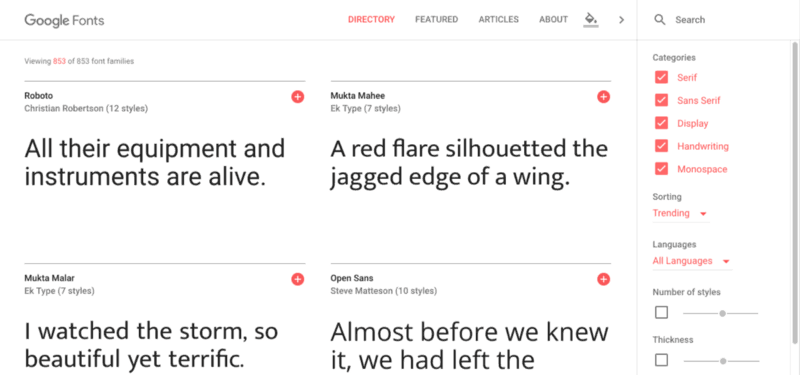
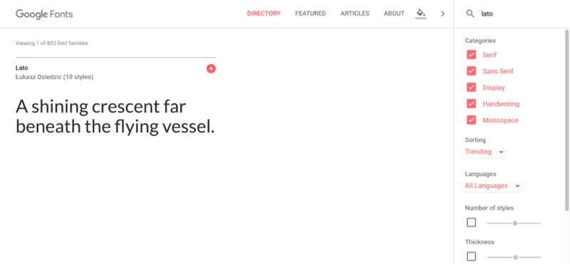
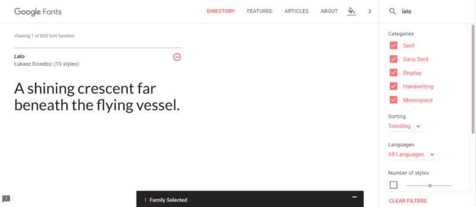
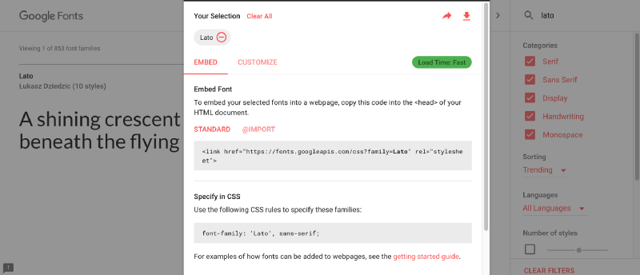
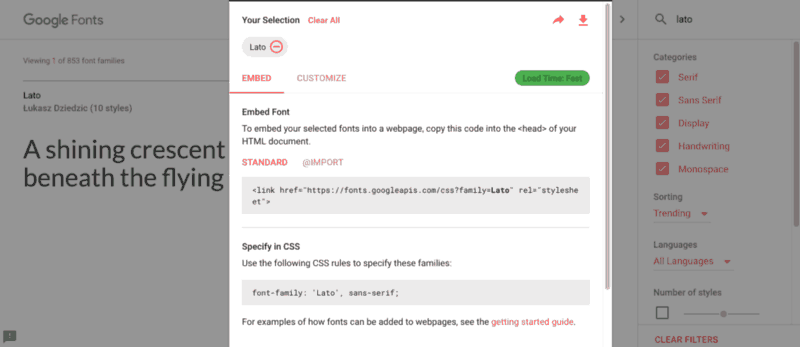
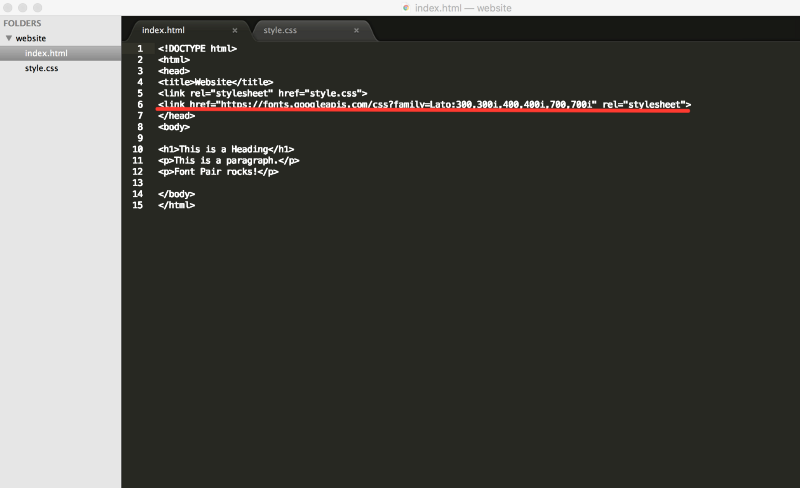
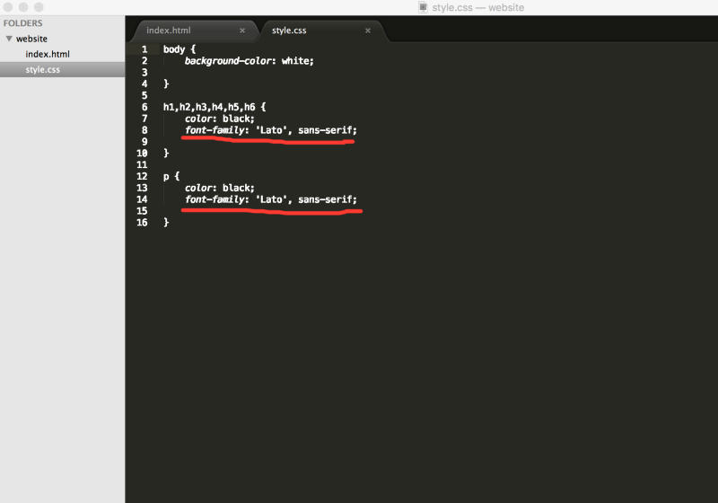
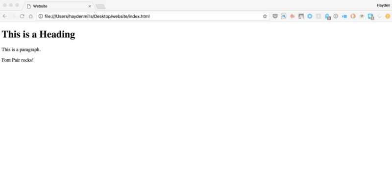

Visit the Google Fonts website where you will be able to choose from 853 font families and counting! The website allows you to filter results by font style, languages, popularity, and weight. Google Fonts also features new fonts if you visit the “featured” page
2) Search for fonts you like
Each font family has a plus button in the upper right hand corner. Click the plus button to add the font family to the “selection drawer” that appears at the bottom of the screen.
The “selection drawer” is where you will see all the fonts you’ve added. It’s where you will find the code to add to your website. You also have the option to download the fonts to your desktop.
From the “selection drawer,” you will copy the code to paste in your HTML and CSS. In order for Google Fonts to work on your website, you must have both the font family linked to the Google Fonts API (in the HTML) and you must have the font family specified (in the CSS).
This is your last chance to add different font weights and styles to your font families before adding them to your website. Only add the font weights and styles you know you will need, because the more fonts you add the slower they will load on your site.
Alright we are almost done! All we need to do now is copy and paste the HTML and CSS code into your website. First, copy the HTML link into the head of your HTML doc.
Finally, we also need to copy and paste the CSS rules into your CSS file. If you’re adding one Google Font for your website, you can add the CSS font family rules into your body tag. Otherwise, you will need to be sure you are adding it to the correct elements in your CSS files.
Don’t forget to save and refresh!
